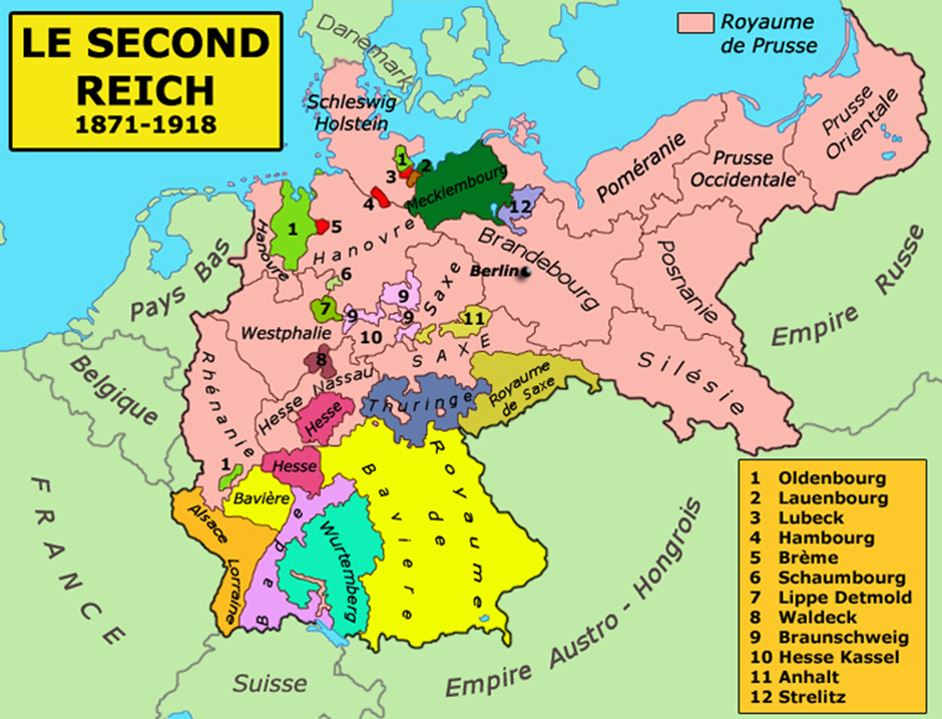

On l’oublie souvent, l’Allemagne, après la guerre franco-prussienne de 1870, a constitué un vaste empire colonial sur une base mercantile. En effet, les deux principales puissances mondiales de l’époque, le Royaume-Uni et la France, se sont déjà partagé la plupart des terres et Bismarck, pense alors à une politique coloniale qui ne doit pas aller à l’encontre de celle menée par ces deux grandes puissances. La politique coloniale allemande se résumera donc par une de ses phrases célèbres : « Le marchand doit précéder le soldat ». Concrètement, l’Allemagne confie à des grandes compagnies privées l’exploration et l’exploitation de nouvelles terres et elle leur offre un protectorat. Le premier protectorat est institué en 1884, la même année que la 2e Conférence de Berlin qui place l’Allemagne au centre du jeu diplomatique.
A l’occasion de la signature de la convention du 28 juin 1882, publiée en mars 1883, par laquelle l’Angleterre et la France garantissaient réciproquement des droits égaux à leurs commerçants dans leurs possessions africaines, le Chancelier demanda aux villes hanséatiques de produire un rapport, les invitant à proposer des mesures pour favoriser l’extension du commerce allemand sur la côte occidentale d’Afrique, ce qui conduira à la création du Cameroun en 1884 au profit des Maisons Woermann et Jantzen et Thormahlen. D’autres protectorats ou accords se succéderont jusqu’à la fin du 2e Reich.
Depuis la chute du Mur, en 1989, l’Allemagne s’est lancée dans une ouverture vers l’Est comme le montre Stephan Martens, professeur de civilisation allemande contemporaine à l’Université Michel de Montaigne / Bordeaux 3, qui explique cet intérêt stratégique « car pour tous les responsables allemands la préoccupation permanente est d’exporter la stabilité de l’Union européenne (UE) pour ne pas un jour importer l’instabilité de l’Est. »
En dépit de l’Affaire ukrainienne, cette ouverture vers l’Est reste une constante bien que l’Allemagne se tourne, de plus en plus, vers l’Asie et la Chine. Citons, encore Bismarck qui rétorquait à Eugen Wolf qui lui montrait une carte de ses voyages en Afrique : « Ihre Karte von Afrika ist ja sehr schön, aber meine Karte von Afrika liegt in Europa. Hier liegt Russland und hier (…) liegt Frankreich, und wir sind in der Mitte. Das ist meine Karte von Afrika. » (Votre carte d’Afrique est très bien, mais mon Afrique à moi s’étend en Europe. Ici, c’est la Russie, là la France et nous sommes au milieu. C’est ça ma carte de l’Afrique)
Tout comme au 19e siècle l’Allemagne se doit de revoir sa politique d'exportation massive, dont dépend sa survie économique (50 % de son PIB), et elle a choisi de l’orienter, outre les marchés russes, vers le marché chinois et plus généralement vers les marchés de l'Est asiatique. Ainsi la Chancelière, Angela MERKEL, s’est déjà rendu une dizaine de fois en visite officielle en Chine depuis 2005, appuyant, a posteriori, Klaus KINKEL qui avait déclaré en 1994, alors qu’il était ministre des Affaires étrangères, « L’Asie est devenue un nouveau centre de gravité économique, technologique et politique mondial. Une des priorités de l’Allemagne en Asie est de préserver à tout prix, sa position.
En cela, la coopération de l’ensemble des forces du gouvernement fédéral – des Länder, de la communauté des affaires et des autres segments de la société – est requise.
C’est une question d’innovation et de nécessaire adaptation ». De fait, Angela Merkel multiplie les voyages vers d’autres pays importants d’Asie du Sud-Est. Ainsi, au Japon, elle a rappelé les liens économiques importants et anciens qui unissent l’Archipel nippon et son pays en évoquant la Mission Iwakura. Lors de son voyage en Europe, cette mission avait étudié avec beaucoup d’intérêt le modèle de société allemand en concluant que la meilleure façon d’asseoir le pouvoir impérial, de l’ère Meiji, était de « s’inspirer du modèle autoritaire allemand en y ajoutant un « enrobage » symbolique japonais » (Le Commencement d'un monde: Vers une modernité métisse de Jean-Claude GUILLEBAUD). Que ce soit au Vietnam, en Indonésie ou plus généralement en Asie, l’Allemagne continue une politique étrangère héritée de Bismarck, mais que pourra faire le soldat, le cas échéant, pour appuyer cette politique quand on sait que seul vingt pour cent de la population allemande veulent que l’Allemagne s’engage plus fortement dans l’OTAN ? Plus de soixante pour cent sont contre l’utilisation d’instruments militaires et donc contre le fait que l’Allemagne, comme l’avait exigé le président fédéral Gauck, s’engage « plus tôt, de manière plus décidée et plus substantielle » dans la résolution des conflits mondiaux, « pas seulement sur le plan politique, mais aussi militaire ». (La politique étrangère allemande en 2014 par Christian NUNLIST).
Dans ce contexte, souvenons-nous du discours prononcé par Charles de Gaulle en 1946 à Bar-le-Duc : « Quelles que soient ses épreuves, l'Allemagne demeure l'Allemagne, c'est-à-dire un grand peuple, massivement installé au cœur de l'Europe, qui dans l'abîme se souvient des sommets et que le démon de la guerre pourrait encore tenter un jour si la chance lui était offerte de retrouver sa grandeur en conjuguant son ambition avec celle de quelqu'un d'autre. Pour mettre l'Allemagne, comme on dit « hors d'état de nuire », il ne suffit pas d'empêcher qu'elle soit directement menaçante, il faut encore faire en sorte qu'elle ne puisse être ni tentatrice, ni tentée. Sinon, malheur, une fois de plus, aux fils et aux filles des hommes ! C'est pourquoi la France a, vis-à-vis d'elle-même et vis-à-vis des autres, le devoir de s'opposer à ce que l'Allemagne redevienne l'État unifié et centralisé, bref le Reich, dont l'armature et l'impulsion furent toujours les conditions de ses belliqueuses entreprises »
Discours à nuancer dans la mesure où le tandem de Gaulle-Adenauer a tout fait pour que l’Allemagne soit de nouveau réunifiée. De Gaulle, ne voulant pas nommer l’Allemagne de l’Est, parlait du reste de la Prusse et de la Saxe…
Restaurer l’axe franco-allemand doit rester la priorité de la politique européenne de la France et force est de constater que, depuis une dizaine d’années, peu d’effort ont été fait dans ce sens. Le quasi abandon de l’enseignement de l’allemand par l’éducation nationale en est un des signes, signal faible mais signal quand même.
Partager cette page